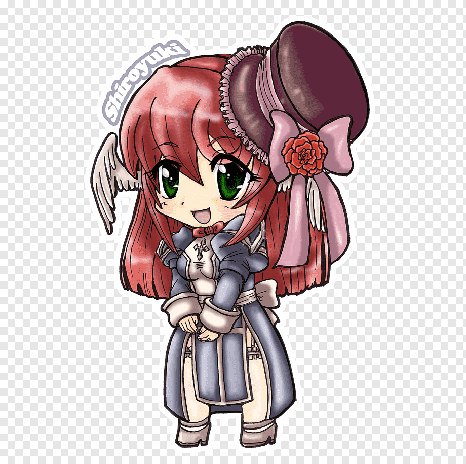
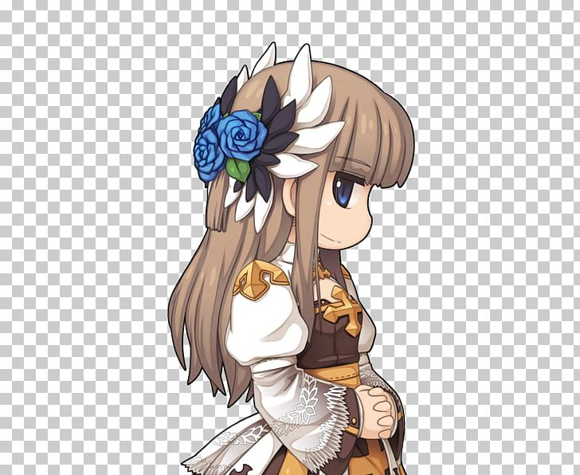
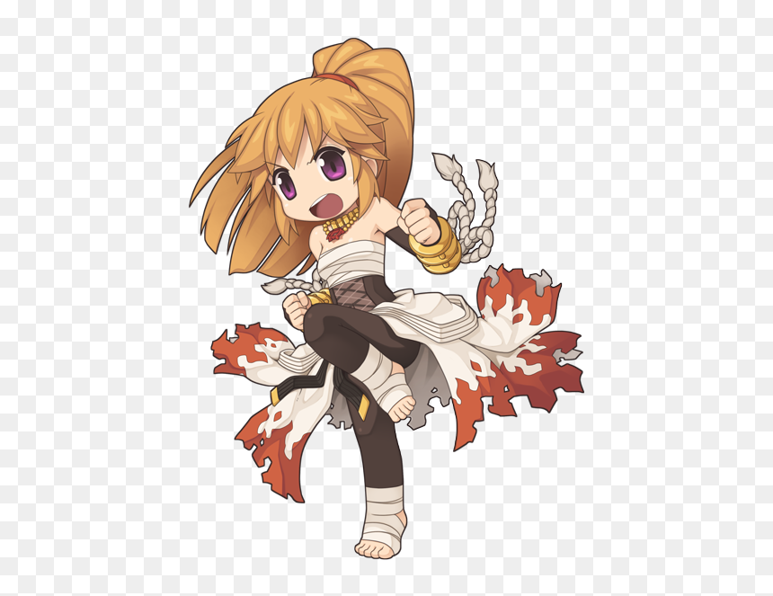
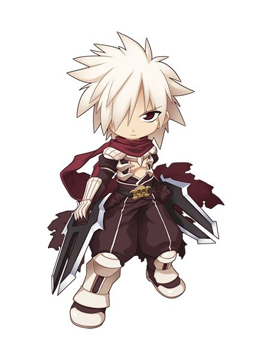
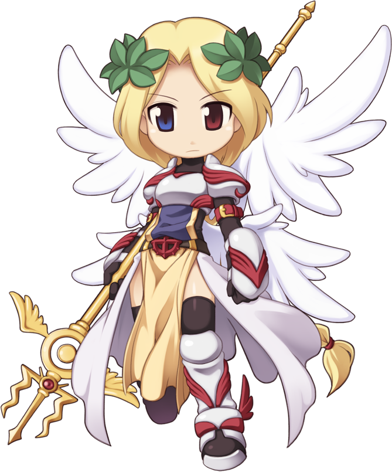
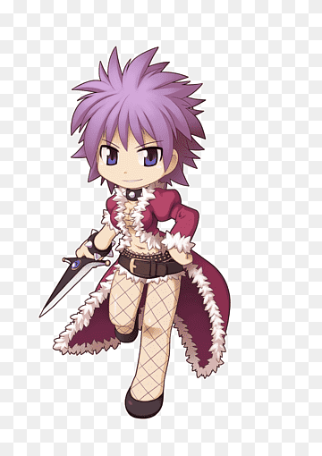

Olá, sou nova no ragnarok, alguém poderia me ajudar como a evoluir minha personagem para proxima classe ?

Nao sei mais o que fazer para refinar meu arco pra +10, o que eu poderia fazer para ele nao quebrar toda vez que refino ele? Existe algum item que aumenta a sorte ou nao deixe meu arco quebrar ? se alguem puder tirar essa duvida eu agradeço.

Alguem tem a carta do sinx de Lh3 para vender ? estou querendo ficar invisivel kkk

Procuro quem venda Kiel D-01, por favor chama no inbox no jogo, meu nick -Shion-

Como faço para capturar um monstro como pet ? vejo muitos jogadores com monstros aleatorios como pet, eu tambem queria um xD.

Como tankar um Arcano com a carta Hw no pvp ? o dano do arcano com essa carta é ridiculo de forte, anula toda minha mdef, o que eu faço ?